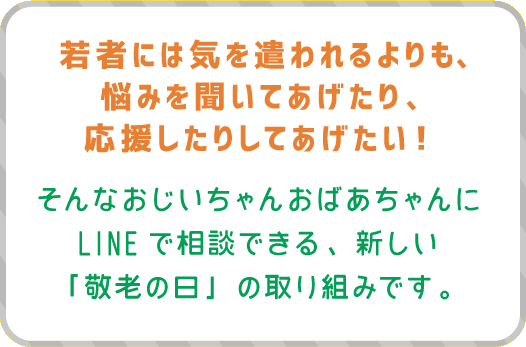

ともさん(70代)
趣味は水泳、特技は着付け。
文武両道、音吐朗々。磨き上げた教養は黙っていても溢れ出る。 座右の銘は「親身に、親切に」。 真の大和撫子があなたの悩みにお答えします。
文武両道、音吐朗々。磨き上げた教養は黙っていても溢れ出る。 座右の銘は「親身に、親切に」。 真の大和撫子があなたの悩みにお答えします。
ひろさん(80代)
特技はカラオケ、社交ダンス。
さらに趣味にゴルフ、と多才。
素敵な笑顔にしびれる歌声。
高度経済成長を全身で支え、
数多の壁を乗り越えたその背中は、とてつもなく広い。
①LINEで友達登録!
9/18(月)の10:00に、公式アカウントからメッセージが来るよ！
それまでに公式アカウントと友だちになっておいてくださいね。
もちろん、9/18(月)の10時以降に登録してもOK!
でも、その日の18時まで限定のキャンペーンだから気をつけて！
それまでに公式アカウントと友だちになっておいてくださいね。
もちろん、9/18(月)の10時以降に登録してもOK!
でも、その日の18時まで限定のキャンペーンだから気をつけて！
②相談してみよう！
悩み相談の受付開始時間が来たら、どんどん悩み相談ができるよ！
(受付時間：9/18(月)10:00〜18:00)
より的確に回答できるように、以下のテンプレートで相談を考えておいてね！
(受付時間：9/18(月)10:00〜18:00)
より的確に回答できるように、以下のテンプレートで相談を考えておいてね！
●ニックネーム
●性別
●相談したい高齢者
●相談したい悩み
悩みは、☓系の会社で働いている、付き合って△年のパートナーがいるが、など現在の状況と一緒に、お悩みを詳しく書いてもらえると、とっても回答しやすいよ！●性別
●相談したい高齢者
●相談したい悩み
ほりさん(60代)